derivs_LV <- function(t, Xs, a, b, c, d) { # Lotka-Volterra: prey N, predator P
N <- Xs[1]; P <- Xs[2]
c(N * (a - b * P), P * (c * N - d))
}
# generic multi-variable RK4 (same as Part 3A)
RK4_generic <- function(derivs, X0, t.total, dt, ...) {
t_all <- seq(0, t.total, by = dt); n_all <- length(t_all)
X_all <- matrix(0, n_all, length(X0)); X_all[1, ] <- X0
for (i in 1:(n_all - 1)) {
t0 <- t_all[i]
k1 <- dt * derivs(t0, X_all[i, ], ...)
k2 <- dt * derivs(t0 + dt / 2, X_all[i, ] + k1 / 2, ...)
k3 <- dt * derivs(t0 + dt / 2, X_all[i, ] + k2 / 2, ...)
k4 <- dt * derivs(t0 + dt, X_all[i, ] + k3, ...)
X_all[i + 1, ] <- X_all[i, ] + (k1 + 2 * k2 + 2 * k3 + k4) / 6
}
cbind(t_all, X_all)
}3D. Modeling predator-prey dynamics
This chapter models a predator-prey system, a cornerstone example of how populations regulate one another in an ecosystem (Carroll 2016), with the classic Lotka-Volterra equations (Lotka 1925; Volterra 1926; Sontag 2026). Unlike the toggle switch and chemostat of Part 3A through Part 3C, where every trajectory settled onto a fixed point, this system oscillates: its trajectories form closed orbits around a center. That difference reshapes the analysis, so beyond reusing the phase-plane tools we also look at what a center means for stability and, at the end, how to fit the model’s parameters to real population data. The general derivations (RK4, vector fields, the Jacobian stability test) are only referenced here; see Parts 3A and 3B for them.
3D.1 Lotka-Volterra model
Let \(N\) be the prey population and \(P\) the predator population. The model is
\[\begin{equation} \begin{cases} \dfrac{dN}{dt} = f(N, P) = N\,(a - bP) \\[2mm] \dfrac{dP}{dt} = g(N, P) = P\,(cN - d) \end{cases} \tag{1} \end{equation}\]
Prey grow exponentially at rate \(a\) and are eaten at a rate \(bP\) proportional to the predator level; predators die off at rate \(d\) and reproduce at a rate \(cN\) set by the available prey. All four parameters are positive. Throughout we take \(a = d = 1\), \(b = 0.03\), and \(c = 0.02\).
3D.2 Oscillations and closed orbits
With predators absent (\(P = 0\)) the prey equation reduces to \(dN/dt = aN\), pure exponential growth; with prey absent (\(N = 0\)) the predators decay as \(dP/dt = -dP\). When both are present the two populations chase each other and the levels oscillate in time. In the phase plane this shows up as closed orbits: starting from different initial conditions traces a family of nested loops, none of which spirals in or out. This is the signature of a conservative (center-type) system and is qualitatively different from the attractor dynamics of Parts 3A-3C.
NoteRecipe 3D.2.1
Objective. Simulate the Lotka-Volterra predator-prey model and see its oscillations and closed orbits.
Model. The Lotka-Volterra predator-prey model: prey N grow and are eaten by predators P, which grow on the prey and die off, dN/dt = N*(a - b*P), dP/dt = P*(c*N - d).
Method. Integrate the two-variable system with the generic RK4, from several initial conditions.
Test. a = 1, b = 0.03, c = 0.02, d = 1; starting counts including (N, P) = (30, 10), (40, 20), (30, 25), (20, 40); integrated 50 time units at dt = 0.01.
Show. A time-series plot of N and P, and a phase-plane plot of the nested closed orbits.
Verification. The two populations oscillate out of phase in time, and in the phase plane the trajectories form a family of nested closed loops.
R implementation
a <- 1; b <- 0.03; c <- 0.02; d <- 1
res <- RK4_generic(derivs_LV, c(30, 10), 50, 0.01, a, b, c, d) # coexistence
plot(res[, 1], res[, 2], type = "l", col = 2, xlab = "t", ylab = "Levels",
xlim = c(0, 50), ylim = c(0, 150))
lines(res[, 1], res[, 3], col = 3) # predator lags prey
legend("topright", inset = 0.02, legend = c("N (prey)", "P (predator)"),
col = 2:3, lty = 1, cex = 0.8)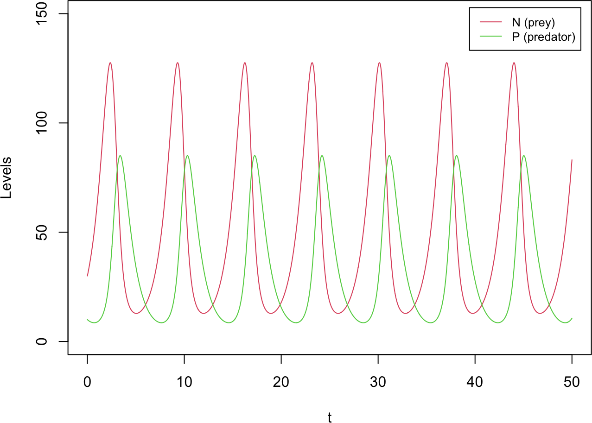
# nested closed orbits from four initial conditions
ICs <- rbind(c(30, 10), c(40, 20), c(30, 25), c(20, 40))
par(pty = "s") # square phase plane
plot(NULL, xlab = "N", ylab = "P", xlim = c(0, 150), ylim = c(0, 100))
for (i in seq_len(nrow(ICs))) {
r <- RK4_generic(derivs_LV, ICs[i, ], 50, 0.01, a, b, c, d)
lines(r[, 2], r[, 3], col = i + 1)
}
points(ICs[, 1], ICs[, 2], pch = 16)
legend("topright", inset = 0.02, title = "Initial (N, P)",
legend = apply(ICs, 1, paste, collapse = ","), col = 2:5, lty = 1, cex = 0.8)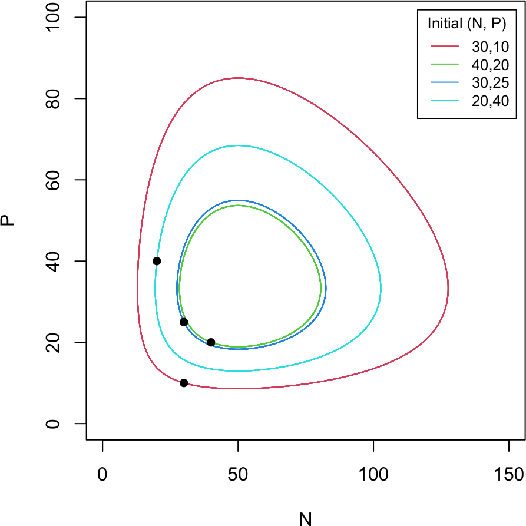
Python implementation
import numpy as np
import matplotlib.pyplot as plt
def derivs_LV(t, Xs, a, b, c, d): # Lotka-Volterra: prey N, predator P
N, P = Xs
return [N * (a - b * P), P * (c * N - d)]
# generic multi-variable RK4 (same as Part 3A)
def RK4_generic(derivs, X0, t_total, dt, **kw):
t_all = np.arange(0, t_total + dt, dt); n = len(t_all)
X_all = np.zeros((n, len(X0))); X_all[0] = X0
for i in range(n - 1):
t0 = t_all[i]
k1 = dt * np.array(derivs(t0, X_all[i], **kw))
k2 = dt * np.array(derivs(t0 + dt / 2, X_all[i] + k1 / 2, **kw))
k3 = dt * np.array(derivs(t0 + dt / 2, X_all[i] + k2 / 2, **kw))
k4 = dt * np.array(derivs(t0 + dt, X_all[i] + k3, **kw))
X_all[i + 1] = X_all[i] + (k1 + 2 * k2 + 2 * k3 + k4) / 6
return np.column_stack((t_all, X_all))a, b, c, d = 1, 0.03, 0.02, 1
par = dict(a=a, b=b, c=c, d=d)
res = RK4_generic(derivs_LV, [30, 10], 50, 0.01, **par) # coexistence
plt.plot(res[:, 0], res[:, 1], color="red", label="N (prey)")
plt.plot(res[:, 0], res[:, 2], color="green", label="P (predator)") # predator lags prey
plt.xlabel("t"); plt.ylabel("Levels"); plt.xlim(0, 50); plt.ylim(0, 150)Text(0.5, 0, 't')
Text(0, 0.5, 'Levels')
(0.0, 50.0)
(0.0, 150.0)plt.legend(loc="upper right"); plt.show()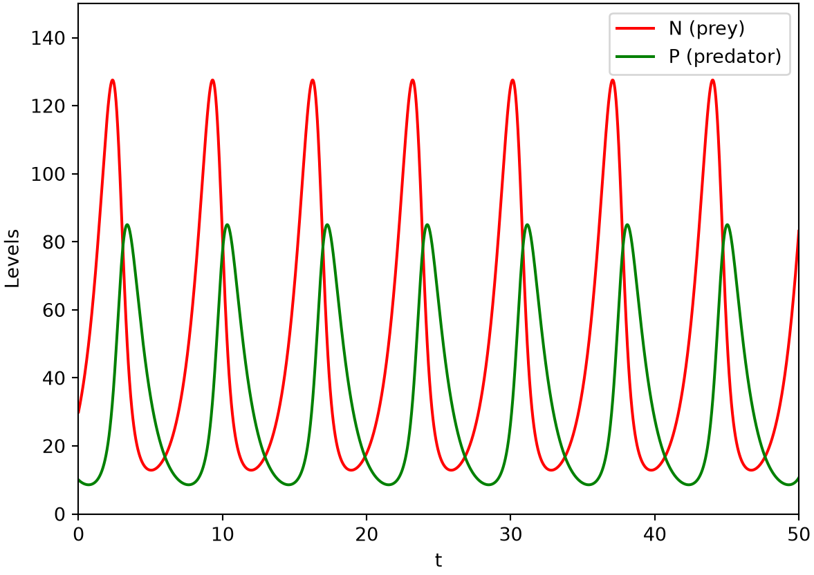
# nested closed orbits from four initial conditions
ICs = np.array([[30, 10], [40, 20], [30, 25], [20, 40]])
for i, ic in enumerate(ICs):
r = RK4_generic(derivs_LV, ic, 50, 0.01, **par)
plt.plot(r[:, 1], r[:, 2], label=f"{ic[0]},{ic[1]}")
plt.scatter(ICs[:, 0], ICs[:, 1], color="black", zorder=3)
plt.xlabel("N"); plt.ylabel("P"); plt.xlim(0, 150); plt.ylim(0, 100)Text(0.5, 0, 'N')
Text(0, 0.5, 'P')
(0.0, 150.0)
(0.0, 100.0)plt.legend(title="Initial (N, P)", loc="upper right", fontsize=8); plt.show()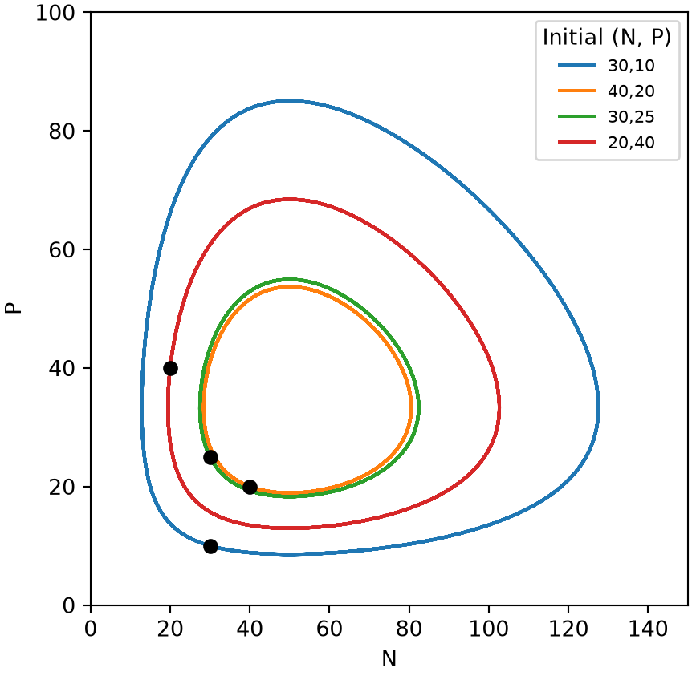
NotePractice Q1
Confirm the two degenerate regimes analytically and by simulation: with \(P(0) = 0\) the prey grow as \(N(t) = N(0)e^{at}\), and with \(N(0) = 0\) the predators decay as \(P(t) = P(0)e^{-dt}\). Why do these axes act as invariant boundaries the full trajectories can never cross?
NotePractice Q2
The Lotka-Volterra system has a conserved quantity, \(H(N, P) = cN - d\ln N + bP - a\ln P\), that stays constant along every trajectory. Verify numerically that \(H\) is (nearly) constant along a simulated orbit, and explain why its conservation forces the orbits to be closed rather than spiraling.
3D.3 Nullclines and steady states
The nullclines follow directly from Equation (1). The N-nullcline (\(dN/dt = 0\)) is \(N = 0\) or \(P = a/b\); the P-nullcline (\(dP/dt = 0\)) is \(P = 0\) or \(N = d/c\). Each nullcline is therefore a pair of straight lines. A steady state requires both derivatives to vanish, so only crossings between an N-nullcline line and a P-nullcline line count (two lines from the same nullcline crossing do not). That gives two steady states, \(X_1 = (0, 0)\) and \(X_2 = (d/c, a/b)\). Below we draw the unit vector field (as in Part 3A), overlay the four nullcline lines and the two steady states, and add one orbit.
R implementation
library(ggplot2)
grid <- expand.grid(N = seq(0, 150, 10), P = seq(0, 100, 10))
vfu <- t(apply(grid, 1, function(Xs) {
v <- derivs_LV(0, Xs, a, b, c, d); c(Xs, v / sqrt(sum(v^2)))
}))
vfu <- as.data.frame(vfu); colnames(vfu) <- c("N", "P", "dN", "dP")
p_field <- ggplot(vfu, aes(N, P)) +
geom_segment(aes(xend = N + 3 * dN, yend = P + 3 * dP),
arrow = arrow(length = unit(0.05, "in")))
orbit <- as.data.frame(RK4_generic(derivs_LV, c(30, 10), 50, 0.01, a, b, c, d))
colnames(orbit) <- c("t", "N", "P")
p_field +
geom_vline(aes(xintercept = 0, colour = "N-nullcline")) +
geom_hline(aes(yintercept = a/b, colour = "N-nullcline")) +
geom_hline(aes(yintercept = 0, colour = "P-nullcline")) +
geom_vline(aes(xintercept = d/c, colour = "P-nullcline")) +
geom_point(aes(x = 0, y = 0, colour = "Steady state"), size = 3) +
geom_point(aes(x = d/c, y = a/b, colour = "Steady state"), size = 3) +
geom_path(data = orbit, aes(N, P, colour = "Orbit")) +
scale_colour_manual(values = c("red", "black", "blue", "orange")) +
labs(colour = NULL) +
theme(legend.position = c(0.99, 0.99), legend.justification = c(1, 1),
legend.background = element_rect(fill = "white", colour = "grey80"))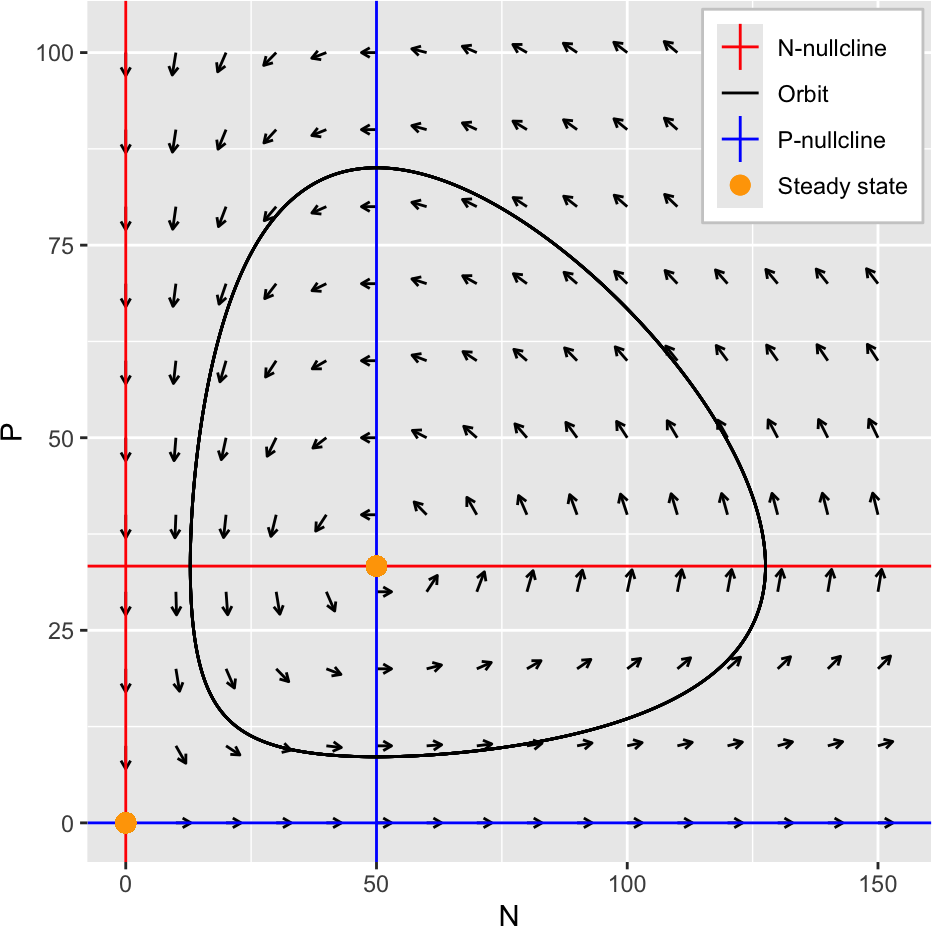
Python implementation
N_ax = np.arange(0, 151, 10); P_ax = np.arange(0, 101, 10)
grid = np.array(np.meshgrid(N_ax, P_ax)).T.reshape(-1, 2)
for N, P in grid:
v = np.array(derivs_LV(0, (N, P), a, b, c, d))
n = np.sqrt(v @ v)
if n > 0:
plt.arrow(N, P, 3 * v[0] / n, 3 * v[1] / n, head_width=1.5, ec="black")
plt.axvline(0, color="red", label="N-nullcline"); plt.axhline(a/b, color="red")
plt.axhline(0, color="blue", label="P-nullcline"); plt.axvline(d/c, color="blue")
plt.scatter([0, d/c], [0, a/b], color="black", s=40, zorder=3, label="Steady state")
orbit = RK4_generic(derivs_LV, [30, 10], 50, 0.01, **par)
plt.plot(orbit[:, 1], orbit[:, 2], color="orange", label="Orbit")
plt.xlabel("N"); plt.ylabel("P"); plt.xlim(0, 150); plt.ylim(0, 100)Text(0.5, 0, 'N')
Text(0, 0.5, 'P')
(0.0, 150.0)
(0.0, 100.0)plt.legend(loc="upper right", fontsize=8); plt.show()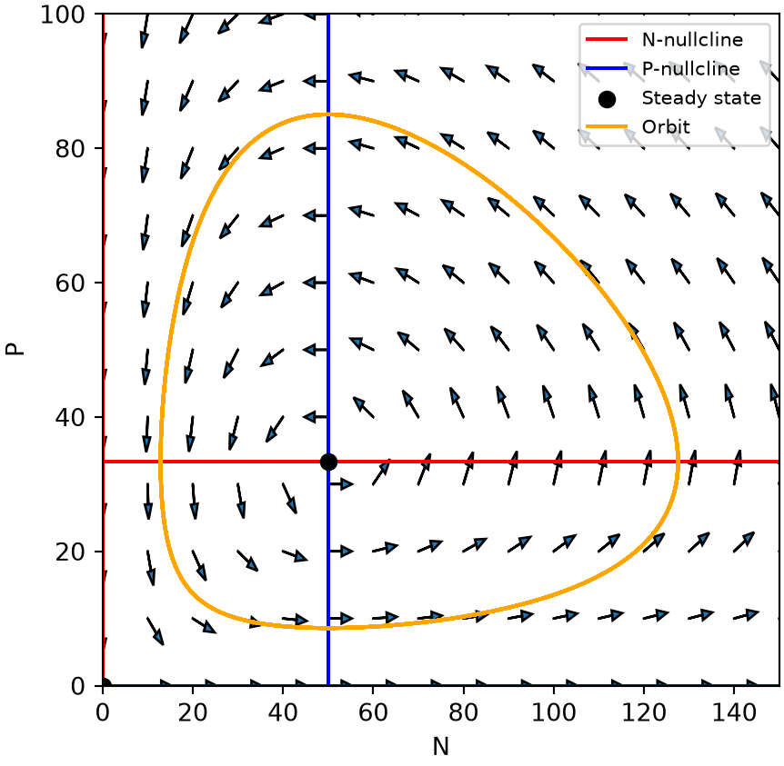
3D.4 Stability: a saddle and a center
Perturbing each steady state slightly (keeping \(N, P \geq 0\)) reveals two very different behaviors. Near \(X_1 = (0, 0)\) the trajectory swings away, so \(X_1\) is unstable. Near \(X_2 = (d/c, a/b) = (50, 33.3)\) the trajectory loops around the point on a closed orbit without approaching or leaving it, the defining feature of a center.
The same conclusion follows from the Jacobian eigenvalues, using the numerical stability classifier of Part 3B (redefined here so the chapter runs on its own). \(X_1\) has real eigenvalues of opposite sign, a saddle (code 3). \(X_2\) has a pure imaginary pair, the mark of a center. Note the numerical classifier reports code 5 (unstable spiral) for \(X_2\): finite- difference noise nudges the zero real part slightly positive, and linear analysis alone cannot separate a true center from a very weak spiral. The closed orbits of 3D.2 are what confirm it is a genuine center.
R implementation
# numerical-Jacobian stability classifier (same as Part 3B)
stability_2D <- function(derivs, ss, ...) {
delta <- 0.001
f0 <- derivs(0, ss, ...)
fdx <- derivs(0, ss + c(delta, 0), ...)
fdy <- derivs(0, ss + c(0, delta), ...)
jacobian <- matrix(c((fdx[1] - f0[1]) / delta, (fdx[2] - f0[2]) / delta,
(fdy[1] - f0[1]) / delta, (fdy[2] - f0[2]) / delta), 2)
lambda <- eigen(jacobian)$values
if (is.complex(lambda)) {
if (Re(lambda[1]) < 0) 4 else 5
} else if (lambda[1] < 0 && lambda[2] < 0) 1
else if (lambda[1] >= 0 && lambda[2] >= 0) 2 else 3
}
ss_all <- rbind(c(0, 0), c(d / c, a / b))
ss_stab <- t(apply(ss_all, 1, function(ss) c(ss, stability_2D(derivs_LV, ss, a, b, c, d))))
colnames(ss_stab) <- c("N", "P", "Stability")
ss_stab # 3 = saddle (X1); 5 = center reported as unstable spiral (X2) N P Stability
[1,] 0 0.00000 3
[2,] 50 33.33333 5Python implementation
# numerical-Jacobian stability classifier (same as Part 3B)
def stability_2D(derivs, ss, **kw):
delta = 0.001
f0 = derivs(0, ss, **kw)
fdx = derivs(0, ss + np.array([delta, 0]), **kw)
fdy = derivs(0, ss + np.array([0, delta]), **kw)
J = np.array([[(fdx[0] - f0[0]) / delta, (fdy[0] - f0[0]) / delta],
[(fdx[1] - f0[1]) / delta, (fdy[1] - f0[1]) / delta]])
lam = np.linalg.eigvals(J)
if np.any(np.iscomplex(lam)):
return 4 if np.real(lam[0]) < 0 else 5
if lam[0] < 0 and lam[1] < 0:
return 1
return 2 if lam[0] >= 0 and lam[1] >= 0 else 3
ss_all = np.array([[0, 0], [d / c, a / b]])
for ss in ss_all:
print(ss, "-> stability", stability_2D(derivs_LV, ss, **par))[0. 0.] -> stability 3
[50. 33.33333333] -> stability 5# 3 = saddle (X1); 5 = center reported as unstable spiral (X2)
NotePractice Q3
Work out the Jacobian of Equation (1) by hand and evaluate it at \(X_2 = (d/c, a/b)\). Show that its eigenvalues are \(\pm i\sqrt{ad}\), purely imaginary, so linear theory predicts a center. Explain why the numerical classifier cannot reliably detect this, and how the conserved quantity of Q2 settles the question.
3D.5 The lynx-hare data
To ground the model in data, we fit its parameters \(a, b, c, d\) to real populations: the Hudson’s Bay Company fur-trade records of snowshoe hare and Canada lynx from 1900-1920, a classic predator-prey series discussed in both Carroll (2016) and Sontag (2026). Both populations rise and fall in a coupled roughly ten-year cycle, the lynx peaks trailing the hare peaks, the same qualitative pattern the model produces. We first look at the data as time courses and as a trajectory in the phase plane, then fit it two ways in the following sections.
R implementation
# the lynx-hare data
lvdata <- data.frame(
year = 1900:1920,
hare = c(30, 47.2, 70.2, 77.4, 36.3, 20.6, 18.1, 21.4, 22, 25.4, 27.1,
40.3, 57, 76.6, 52.3, 19.5, 11.2, 7.6, 14.6, 16.2, 24.7),
lynx = c(4, 6.1, 9.8, 35.2, 59.4, 41.7, 19, 13, 8.3, 9.1, 7.4, 8, 12.3,
19.5, 45.7, 51.1, 29.7, 15.8, 9.7, 10.1, 8.6))
knitr::kable(head(lvdata), col.names = c("Year", "Hare (x1000)", "Lynx (x1000)"))| Year | Hare (x1000) | Lynx (x1000) |
|---|---|---|
| 1900 | 30.0 | 4.0 |
| 1901 | 47.2 | 6.1 |
| 1902 | 70.2 | 9.8 |
| 1903 | 77.4 | 35.2 |
| 1904 | 36.3 | 59.4 |
| 1905 | 20.6 | 41.7 |
# time courses: both populations cycle, with lynx trailing hare
plot(lvdata$year, lvdata$hare, type = "b", pch = 15, col = 2, xlab = "Year",
ylab = "Level (x1000)", xlim = c(1900, 1920), ylim = c(0, 100))
lines(lvdata$year, lvdata$lynx, type = "b", pch = 15, col = 3)
legend("topright", inset = 0.02, legend = c("Hare", "Lynx"), col = 2:3, lty = 1, cex = 0.8)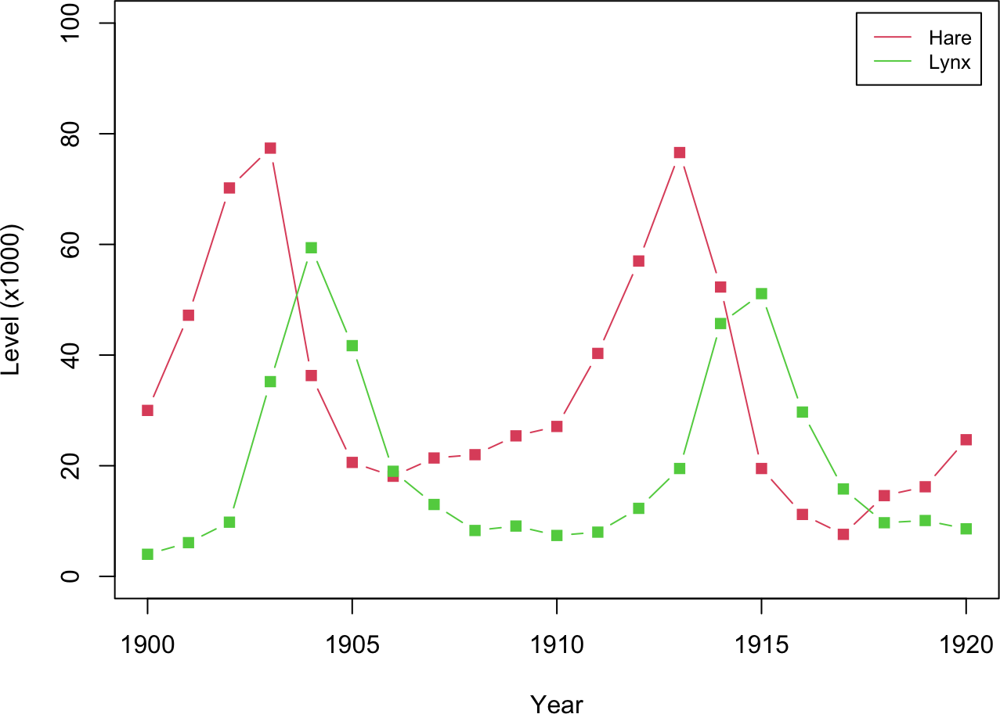
# the same data as a trajectory in the (hare, lynx) phase plane
par(pty = "s") # square phase plane
plot(lvdata$hare, lvdata$lynx, type = "b", pch = 15, col = 4,
xlab = "Hare (x1000)", ylab = "Lynx (x1000)", xlim = c(0, 100), ylim = c(0, 100))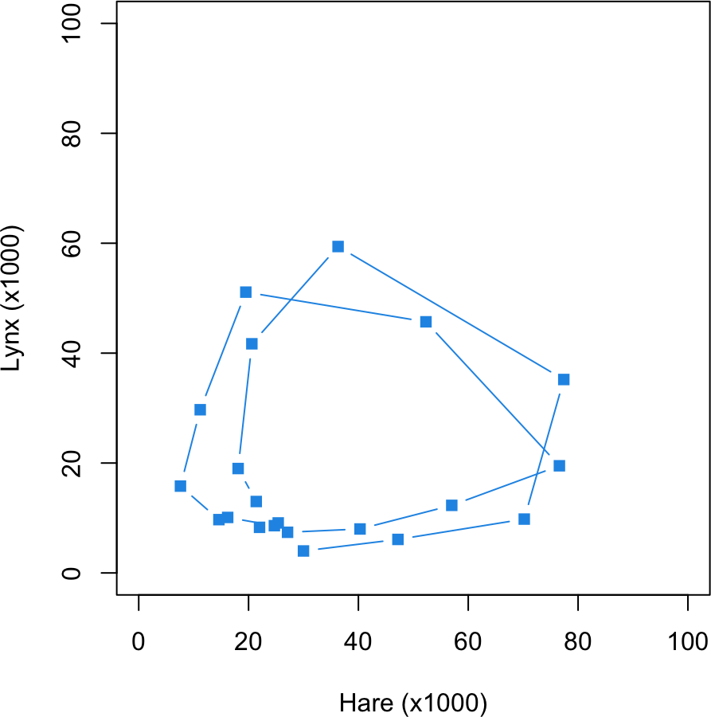
Python implementation
# the lynx-hare data
import pandas as pd
lvdata = pd.DataFrame({
"year": range(1900, 1921),
"hare": [30, 47.2, 70.2, 77.4, 36.3, 20.6, 18.1, 21.4, 22, 25.4, 27.1,
40.3, 57, 76.6, 52.3, 19.5, 11.2, 7.6, 14.6, 16.2, 24.7],
"lynx": [4, 6.1, 9.8, 35.2, 59.4, 41.7, 19, 13, 8.3, 9.1, 7.4, 8, 12.3,
19.5, 45.7, 51.1, 29.7, 15.8, 9.7, 10.1, 8.6]})
print(lvdata.head()) year hare lynx
0 1900 30.0 4.0
1 1901 47.2 6.1
2 1902 70.2 9.8
3 1903 77.4 35.2
4 1904 36.3 59.4# time courses: both populations cycle, with lynx trailing hare
yr = lvdata["year"]
plt.plot(yr, lvdata["hare"], "s-", color="red", label="Hare")
plt.plot(yr, lvdata["lynx"], "s-", color="green", label="Lynx")
plt.xlabel("Year"); plt.ylabel("Level (x1000)"); plt.ylim(0, 100)Text(0.5, 0, 'Year')
Text(0, 0.5, 'Level (x1000)')
(0.0, 100.0)plt.legend(loc="upper right", fontsize=8); plt.show()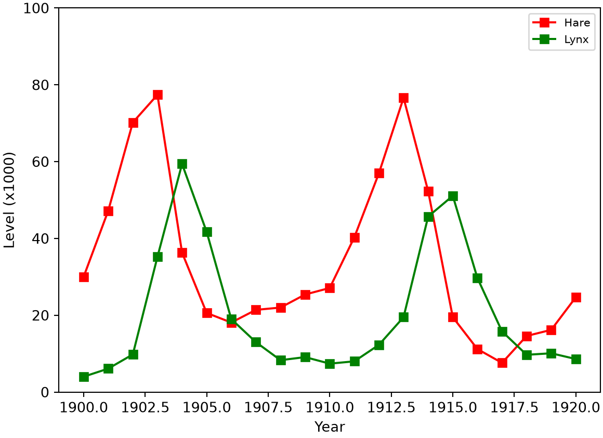
# the same data as a trajectory in the (hare, lynx) phase plane
plt.plot(lvdata["hare"], lvdata["lynx"], "s-", color="blue")
plt.gca().set_aspect("equal") # square phase plane
plt.xlabel("Hare (x1000)"); plt.ylabel("Lynx (x1000)")
plt.xlim(0, 100); plt.ylim(0, 100); plt.show()(0.0, 100.0)
(0.0, 100.0)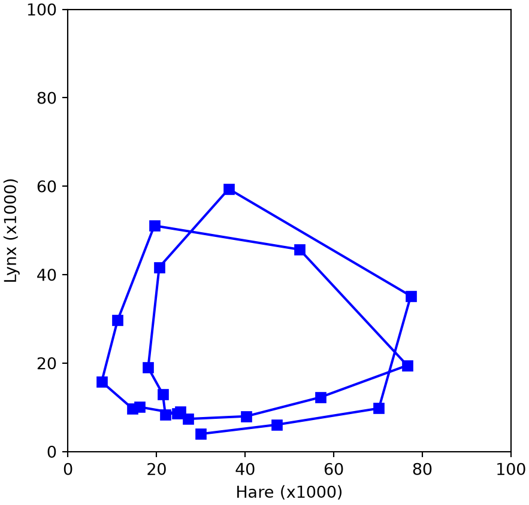
3D.6 Fitting by error minimization
Error minimization simulates the model for a trial parameter set, measures the sum of squared differences (SSD) between the simulated and observed levels, and adjusts the parameters until the SSD is as small as possible. The minimizer (R’s Newton-based nlm, or scipy.optimize.minimize with BFGS) finds only a local minimum, so it needs a reasonable starting guess; here we begin from a hand-picked one. The fitted trajectory follows both the time courses and the phase-plane loop of the data.
NoteRecipe 3D.6.1
Objective. Fit the Lotka-Volterra parameters to observed data by minimizing the error.
Model. The Lotka-Volterra predator-prey model: prey N grow and are eaten by predators P, which grow on the prey and die off, dN/dt = N*(a - b*P), dP/dt = P*(c*N - d).
Method. Simulate the model for trial parameters, measure the sum of squared differences from the data, and adjust the parameters with a local optimizer (Newton or BFGS) from a reasonable starting guess.
Test. The lynx-hare yearly data, from a hand-picked starting guess for a, b, c, d.
Show. The fitted parameters and the fitted trajectory over the lynx-hare data, in time and in the phase plane.
Verification. The fitted trajectory follows both the time courses and the phase-plane loop of the data.
R implementation
# minimize the SSD between simulated and observed levels with nlm.
# a, b, c, d are forwarded to derivs_LV through RK4_generic's `...` ellipsis; pass them
# positionally, since a named `d=` would partial-match the derivs/dt formals and error out.
data_LV <- cbind(lvdata$hare, lvdata$lynx)
cal_error <- function(p, nsteps = 10) {
sim <- RK4_generic(derivs_LV, data_LV[1, ], nrow(data_LV) - 1, 1 / nsteps,
p[1], p[2], p[3], p[4])
sim <- sim[seq(1, nrow(sim), by = nsteps), 2:3]
sum((data_LV - sim)^2)
}
p0 <- c(0.5, 0.02, 0.02, 0.5) # hand-picked initial guess
p_fit <- setNames(nlm(cal_error, p0)$estimate, c("a", "b", "c", "d"))
round(p_fit, 4) a b c d
0.5476 0.0281 0.0266 0.8431 # the fitted model against the data (time courses)
sim <- RK4_generic(derivs_LV, data_LV[1, ], 20, 0.1, p_fit[1], p_fit[2], p_fit[3], p_fit[4])
plot(lvdata$year, lvdata$hare, type = "b", pch = 15, col = 2, xlab = "Year",
ylab = "Level (x1000)", xlim = c(1900, 1920), ylim = c(0, 100))
lines(lvdata$year, lvdata$lynx, type = "b", pch = 15, col = 3)
lines(sim[, 1] + 1900, sim[, 2], col = 2, lty = 2)
lines(sim[, 1] + 1900, sim[, 3], col = 3, lty = 2)
legend("topright", inset = 0.02, legend = c("Hare data", "Lynx data", "fit"),
col = c(2, 3, 1), lty = c(1, 1, 2), pch = c(15, 15, NA), cex = 0.8)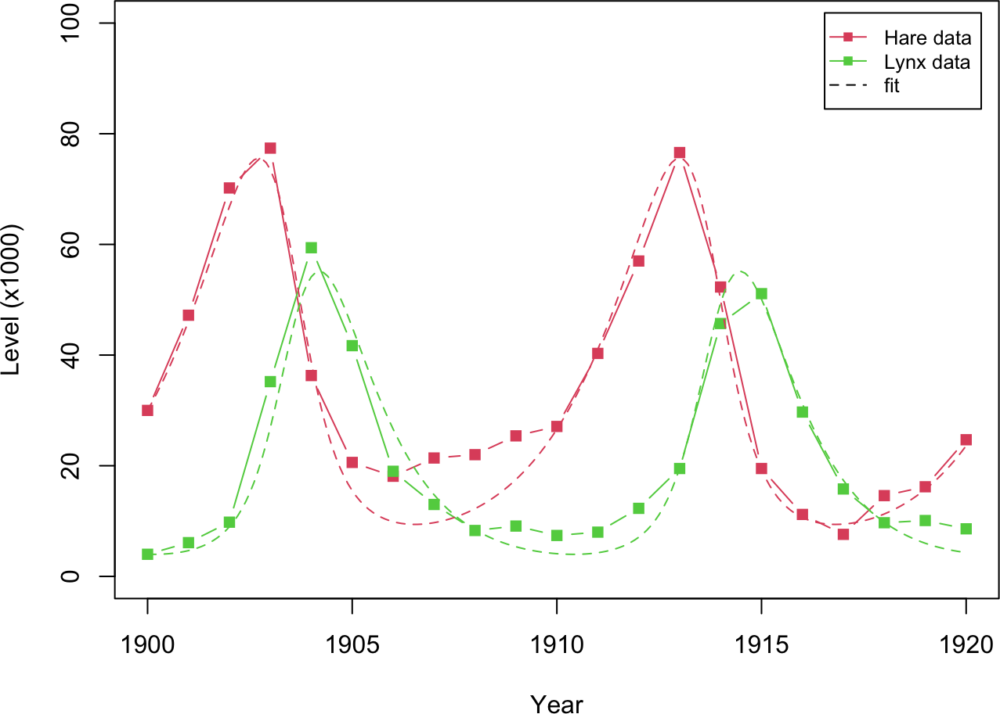
# the same fit as a trajectory in the (hare, lynx) phase plane
par(pty = "s")
plot(lvdata$hare, lvdata$lynx, type = "b", pch = 15, col = 4, xlab = "Hare (x1000)",
ylab = "Lynx (x1000)", xlim = c(0, 100), ylim = c(0, 100))
lines(sim[, 2], sim[, 3], col = 2) # fitted trajectory in the phase plane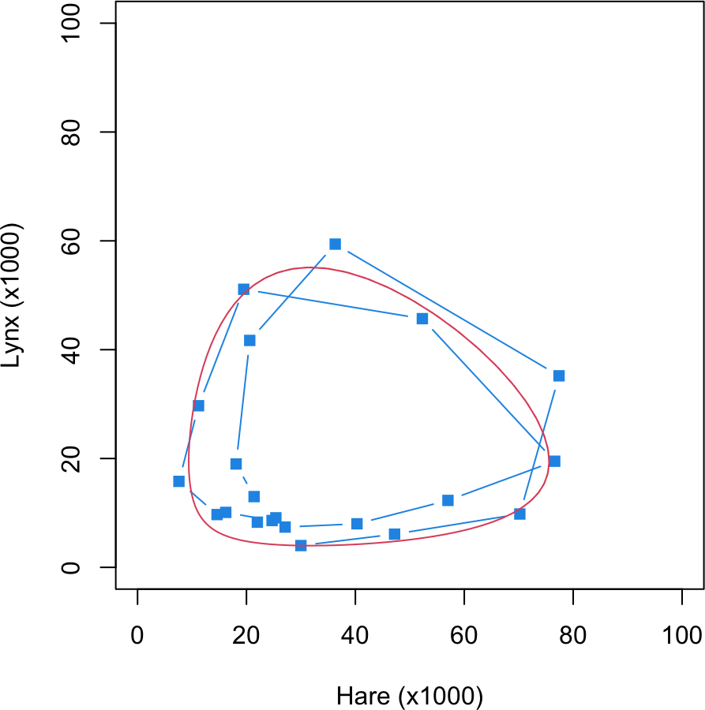
Python implementation
# minimize the SSD between simulated and observed levels.
# scipy.optimize.minimize with BFGS is the counterpart of R's Newton-based nlm;
# a derivative-free method (Nelder-Mead) can stall at a poor local minimum here.
import warnings; warnings.filterwarnings("ignore")
from scipy.optimize import minimize
data_LV = lvdata[["hare", "lynx"]].to_numpy()
def cal_error(p, nsteps=10):
sim = RK4_generic(derivs_LV, data_LV[0], len(data_LV) - 1, 1 / nsteps,
a=p[0], b=p[1], c=p[2], d=p[3])
return np.sum((data_LV - sim[::nsteps, 1:3]) ** 2)
p0 = [0.5, 0.02, 0.02, 0.5] # hand-picked initial guess
p_fit = minimize(cal_error, p0, method="BFGS").x
print("fitted a,b,c,d =", np.round(p_fit, 4))fitted a,b,c,d = [0.5475 0.0281 0.0266 0.8432]# the fitted model against the data (time courses)
sim = RK4_generic(derivs_LV, data_LV[0], 20, 0.1,
a=p_fit[0], b=p_fit[1], c=p_fit[2], d=p_fit[3])
plt.plot(yr, lvdata["hare"], "s-", color="red", label="Hare data")
plt.plot(yr, lvdata["lynx"], "s-", color="green", label="Lynx data")
plt.plot(sim[:, 0] + 1900, sim[:, 1], "--", color="red")
plt.plot(sim[:, 0] + 1900, sim[:, 2], "--", color="green")
plt.xlabel("Year"); plt.ylabel("Level (x1000)"); plt.ylim(0, 100)Text(0.5, 0, 'Year')
Text(0, 0.5, 'Level (x1000)')
(0.0, 100.0)plt.legend(loc="upper right", fontsize=8); plt.show()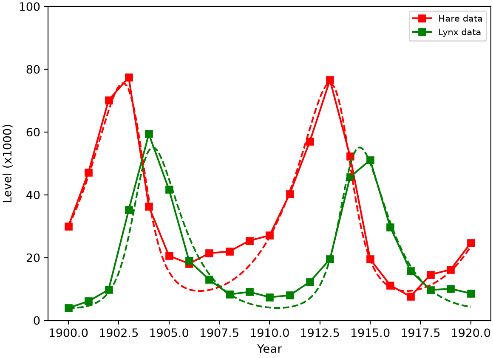
# the same fit as a trajectory in the (hare, lynx) phase plane
plt.plot(lvdata["hare"], lvdata["lynx"], "s-", color="blue", label="data")
plt.plot(sim[:, 1], sim[:, 2], color="red", label="fit") # fitted trajectory
plt.gca().set_aspect("equal")
plt.xlabel("Hare (x1000)"); plt.ylabel("Lynx (x1000)")
plt.xlim(0, 100); plt.ylim(0, 100); plt.legend(fontsize=8); plt.show()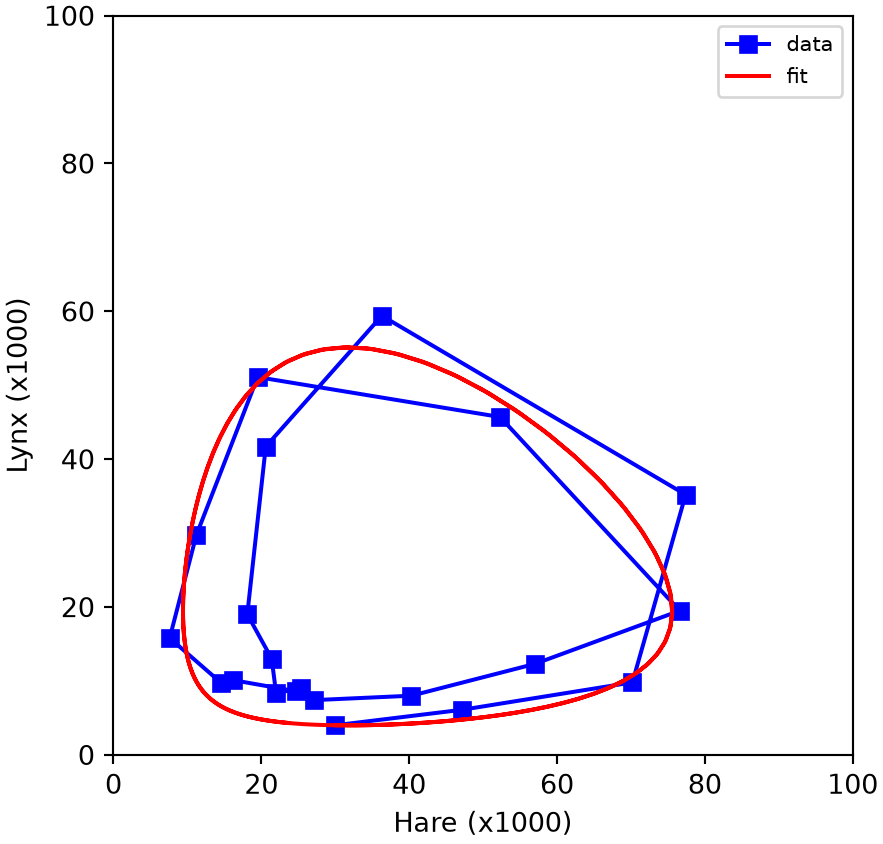
NotePractice Q4
Explore how sensitive the fit is to the optimizer and the starting point. Try several initial guesses and several optimizers (in R, nlm and the methods of optim; in Python, minimize with Nelder-Mead, BFGS, and Powell). Which combinations reach the good fit and which stall at a poor local minimum? What does that say about non-convex fitting problems?
3D.7 Fitting by linear regression
Linear regression exploits a special feature of this model: the rate equations are linear in the parameters. Replacing the time derivatives with centered finite differences at each year turns Equation (1) into a linear system, for the prey \(\frac{N_{t+1} - N_{t-1}}{2} = a\,N_t - b\,N_t P_t\) and similarly for the predator, which ordinary least squares solves directly (no intercept). It is exact only for closely spaced data, so on the sparse yearly record the fit is rougher than error minimization. It is deterministic and cheap, though, which makes it an excellent starting guess for the error minimization (Practice Q5).
NoteRecipe 3D.7.1
Objective. Fit the Lotka-Volterra parameters by linear regression, using that the model is linear in its parameters.
Model. The Lotka-Volterra predator-prey model: prey N grow and are eaten by predators P, which grow on the prey and die off, dN/dt = N*(a - b*P), dP/dt = P*(c*N - d).
Method. Replace the time derivatives with centered finite differences at each data point, turning the rate equations into a linear system, and solve it by ordinary least squares (no intercept).
Test. The lynx-hare yearly data.
Show. The regression-fitted parameters and the fitted trajectory over the data.
Verification. It returns parameters directly and deterministically; on the sparse yearly data the fit is rougher than error minimization but far cheaper.
R implementation
# centered finite differences make Eq (1) linear in the parameters; fit by lm (no intercept)
N <- lvdata$hare; P <- lvdata$lynx; tot <- length(N); mid <- 2:(tot - 1)
d_n <- data.frame(dNdt = (N[3:tot] - N[1:(tot - 2)]) / 2, n = N[mid], mnp = -N[mid] * P[mid])
d_p <- data.frame(dPdt = (P[3:tot] - P[1:(tot - 2)]) / 2, np = N[mid] * P[mid], mp = -P[mid])
p_lr <- c(coef(lm(dNdt ~ 0 + n + mnp, d_n)), coef(lm(dPdt ~ 0 + np + mp, d_p)))
names(p_lr) <- c("a", "b", "c", "d")
round(p_lr, 4) # a good starting guess, though imperfect on its own ... a b c d
0.4710 0.0218 0.0199 0.7079 cal_error(p_lr) # ... its raw SSD is larger than the minimized fit of 3D.6[1] 31145.87# the regression fit against the data (time courses)
sim <- RK4_generic(derivs_LV, data_LV[1, ], 20, 0.1, p_lr[1], p_lr[2], p_lr[3], p_lr[4])
plot(lvdata$year, lvdata$hare, type = "b", pch = 15, col = 2, xlab = "Year",
ylab = "Level (x1000)", xlim = c(1900, 1920), ylim = c(0, 100))
lines(lvdata$year, lvdata$lynx, type = "b", pch = 15, col = 3)
lines(sim[, 1] + 1900, sim[, 2], col = 2, lty = 2)
lines(sim[, 1] + 1900, sim[, 3], col = 3, lty = 2)
legend("topright", inset = 0.02, legend = c("Hare data", "Lynx data", "regression fit"),
col = c(2, 3, 1), lty = c(1, 1, 2), pch = c(15, 15, NA), cex = 0.8)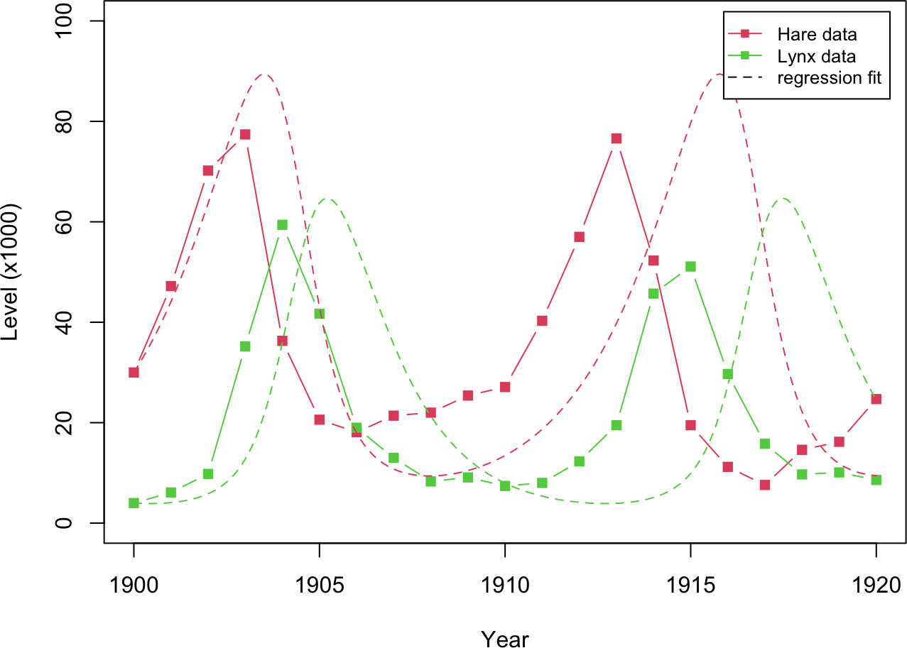
# the same regression fit as a trajectory in the (hare, lynx) phase plane
par(pty = "s")
plot(lvdata$hare, lvdata$lynx, type = "b", pch = 15, col = 4, xlab = "Hare (x1000)",
ylab = "Lynx (x1000)", xlim = c(0, 100), ylim = c(0, 100))
lines(sim[, 2], sim[, 3], col = 2) # regression trajectory in the phase plane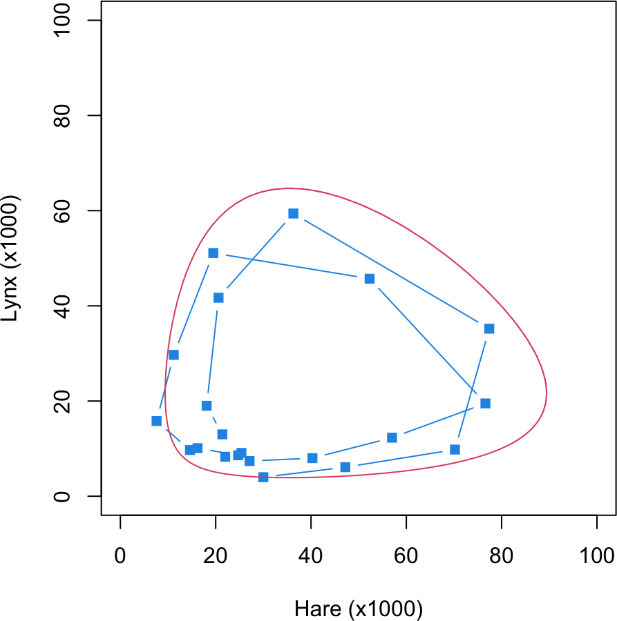
Python implementation
# centered finite differences make Eq (1) linear in the parameters.
# np.linalg.lstsq is the counterpart of R's lm(... - 1) (no intercept).
N = lvdata["hare"].to_numpy(); P = lvdata["lynx"].to_numpy(); tot = len(N); mid = slice(1, tot - 1)
ab = np.linalg.lstsq(np.column_stack([N[mid], -N[mid] * P[mid]]), (N[2:] - N[:-2]) / 2, rcond=None)[0]
cd = np.linalg.lstsq(np.column_stack([N[mid] * P[mid], -P[mid]]), (P[2:] - P[:-2]) / 2, rcond=None)[0]
p_lr = np.array([ab[0], ab[1], cd[0], cd[1]])
print("a,b,c,d =", np.round(p_lr, 4), " raw SSD =", round(cal_error(p_lr), 1))a,b,c,d = [0.471 0.0218 0.0199 0.7079] raw SSD = 31145.9# the regression fit against the data (time courses)
sim = RK4_generic(derivs_LV, data_LV[0], 20, 0.1,
a=p_lr[0], b=p_lr[1], c=p_lr[2], d=p_lr[3])
plt.plot(yr, lvdata["hare"], "s-", color="red", label="Hare data")
plt.plot(yr, lvdata["lynx"], "s-", color="green", label="Lynx data")
plt.plot(sim[:, 0] + 1900, sim[:, 1], "--", color="red")
plt.plot(sim[:, 0] + 1900, sim[:, 2], "--", color="green")
plt.xlabel("Year"); plt.ylabel("Level (x1000)"); plt.ylim(0, 100)Text(0.5, 0, 'Year')
Text(0, 0.5, 'Level (x1000)')
(0.0, 100.0)plt.legend(loc="upper right", fontsize=8); plt.show()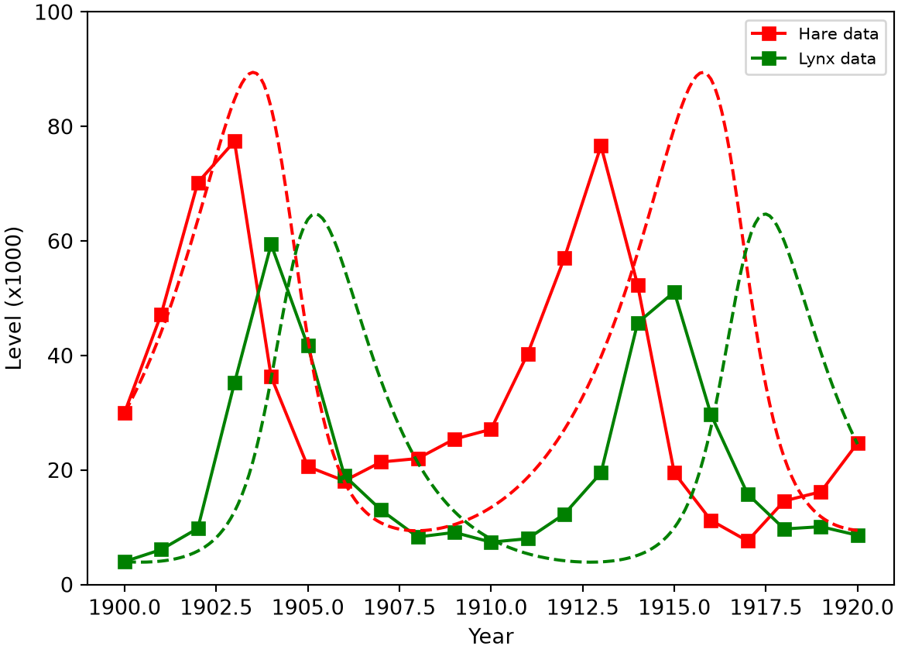
# the same regression fit as a trajectory in the (hare, lynx) phase plane
plt.plot(lvdata["hare"], lvdata["lynx"], "s-", color="blue", label="data")
plt.plot(sim[:, 1], sim[:, 2], color="red", label="regression fit")
plt.gca().set_aspect("equal")
plt.xlabel("Hare (x1000)"); plt.ylabel("Lynx (x1000)")
plt.xlim(0, 100); plt.ylim(0, 100); plt.legend(fontsize=8); plt.show()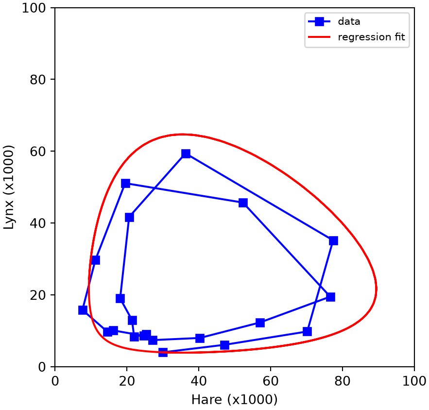
Error minimization tracks the oscillations closely. The raw linear-regression fit is rougher, since finite differences on once-a-year data are crude, but it is a cheap, principled starting point. Neither is perfect: the real lynx-hare cycle is noisier and more complex than a two-species model.
NotePractice Q5
Feed the linear-regression estimate p_lr into the error minimization as its initial guess, in place of the hand-picked p0. Does it reach a comparable (or lower) SSD, and in fewer steps? Seeding a nonlinear fit with a cheap linear one is a common, robust recipe.
NotePractice Q6
Test the claim that the regression error comes mainly from the coarse yearly spacing. Generate a denser dataset by sampling the fitted simulation every few time steps, run the linear regression on it, and check whether the recovered parameters are closer to the ones used to generate it.
NotePractice Q7
Add random noise of increasing amplitude to the data points and refit with both methods. Which approach, linear regression or error minimization, degrades more gracefully, and why?